CanFestival is an OpenSource (LGPL and GPL) CANopen framework.
This project, initiated by Edouard TISSERANT in 2001, has grown thanks to Francis DUPIN and other contributors.
Today, CanFestival focuses on providing an ANSI-C platform independent CANopen stack that can be implemented as master or slave nodes on PCs, Real-time IPCs, and Microcontrollers.
CANopen is a CAN based high level protocol. It defines some protocols to :
The most important document about CANopen is the normative CiA Draft Standard 301, version 4.02. You can now download the specification from the CAN in Automation website at no cost.
To continue reading this document, let us assume that you have read some papers introducing CANopen .
The CANopen library is coming with some tools :
Supported features should conform to DS301. V.4.02 13 february 2002.
Only concise DFC is supported.
LSS services are fully supported although they have to be enabled at compile time. Additionally, FastScan LSS service is also optionally enabled.
What you need on your development workstation.
./src ANSI-C source of \canopen stack ./include Exportables Header files ./drivers Interfaces to specific platforms/HW ./drivers/unix Linux and Cygwin OS interface ./drivers/win32 Native Win32 OS interface ./drivers/timers_xeno Xenomai timers/threads (Linux only) ./drivers/timers_kernel Linux kernel timer/threads ./drivers/timers_unix Posix timers/threads (Linux, Cygwin) ./drivers/can_virtual_kernel Fake CAN network (kernel space) ./drivers/can_serial Serial point to point and PTY hub (*nix only) ./drivers/can_peak_linux PeakSystem CAN library interface ./drivers/can_peak_win32 PeakSystem PCAN-Light interface ./drivers/can_uvccm_win32 Acacetus's RS232 CAN-uVCCM interface ./drivers/can_virtual Fake CAN network (Linux, Cygwin) ./drivers/can_vcom VScom VSCAN interface ./examples Examples ./examples/TestMasterSlave 2 nodes, NMT SYNC SDO PDO, win32+unix ./examples/TestMasterSlaveLSS 3 nodes, NMT SYNC SDO PDO LSS, win32+unix ./examples/TestMasterMicroMod 1 node, control Peak I/O Module, unix ./examples/win32test Ask some DS301 infos to a node (win32) ./objdictgen Object Dictionary editor GUI ./objdictgen/config Pre-defined OD profiles ./objdictgen/examples Some examples/test OD ./doc Documentation source
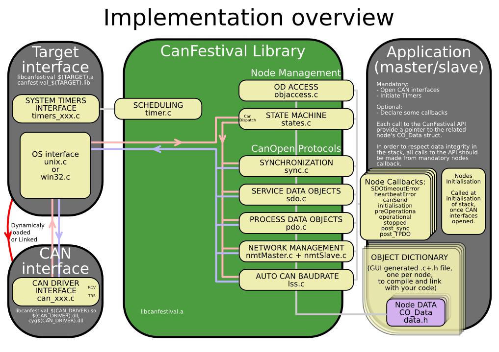
Because most CAN controllers and drivers implement FIFOs, CanFestival consider sending message as a non blocking operation.
In order to prevent reentrant calls to the stack, messages reception is implemented differently on µC and OS.:
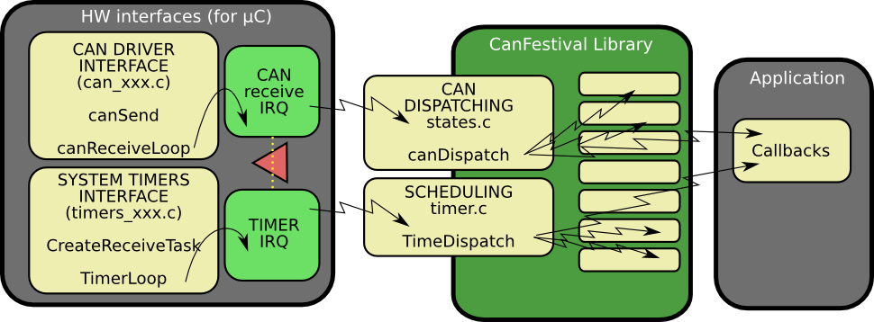
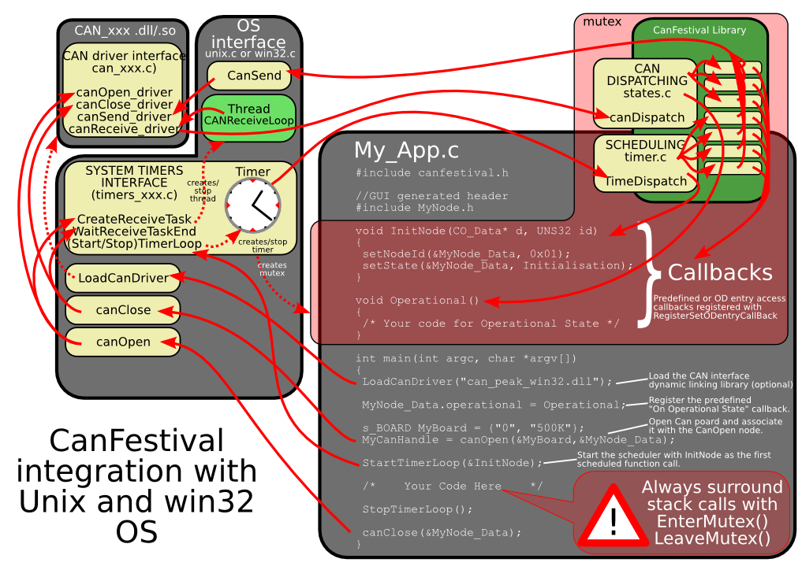
A CANopen node must be able to take delayed actions.
For instance, periodic sync emission, heartbeat production or SDO timeout need to set some alarms that will be called later and do the job.
µC generally do not have enough free timers to handle all the CANopen needs directly. Moreover, CanFestival internal data may be corrupt by reentrant calls.
CanFestival implement a micro -scheduler (timer.c). It uses only one timer to mimic many timers. It manage an alarm table, and call alarms at desired time.
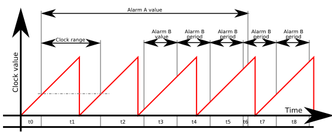
Scheduler can handle short clock value ranges limitation found on some µC. As an example, value range for a 16bit clock counter with 4µs tick is crossed within 0.26 seconds... Long alarms must be segmented.
Chronogram illustrate a long alarm (A) and a short periodic alarm (B), with a A value > clock range > B value. Values t0...t8 are successive setTimer call parameter values. t1 illustrates an intermediate call to TimeDispatch, caused by a delay longer than clock range. Because of long alarm segmentation, at the end of t1, TimeDispatch call will not trig any alarm callback.
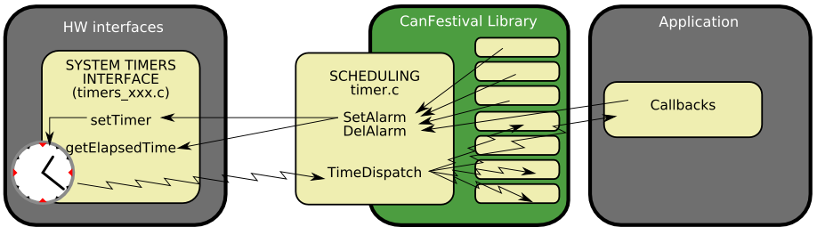
Linux target is default configure target.
Call ./configure – help to see all available compile time options.
After invoking ./configure with your platform specific switches, just type make.
./configure [options] make make install
./configure --timers=unix
To do a CANopen node running on PC -Linux, you need :
With Xenomai :
./configure --timers=xeno
To do a CANopen node running on PC -Linux, you need :
./configure --can=peak_linuxPeakSystems CAN interface is automatically chosen as default CAN interface if libpcan is present in the system.
Please download driver at http://www.peak -system.com/linux and follow instructions in order to install driver on your system.
./configure --can=socket
./configure --can=serialThe CAN serial driver implements a 1:1 serial connection between 2 CAN devices. For example, you can connect 2 CANFestival applications via a NULL modem cable.
Also with this driver comes a software hub, for up to 16 CANFestival apps to be connected on a single PC, with an optional connection to another CAN driver. Note that only the serial driver is supported at this time. The hub uses ptys (pseudo ttys) available on a *nix like system.
./configure --can=lincan
./configure --can=virtual or, for kernel space: ./configure --can=kernel_virtualVirtual CAN interface use Unix pipes to emulate a virtual CAN network. Each message issued from a node is repeat to all other nodes. Currently only works with nodes running in the same process, and does not support work with Xenomai.
./configure --can=vscomThe VSCAN API archive will be automatically downloaded and decompressed (unzip required). See www.vscom.de for available adapters.
./configure --enable-lss
Additionally, the FastScan LSS service can also be enabled.
./configure --enable-lss --enable-lss-fs
Sample provided in /example/TestMasterSlave is installed into your system during installation.
TestMasterSlave
Default CAN driver library is libcanfestival_can_virtual.so., which will simply pass CAN messages through Unix pipes between Master and Slave.
You may also want to specify different can interface and define some CAN ports. Another example using Peaks dual PCMCIA (configure and install with –can=peak) :
TestMasterSlave -l libcanfestival_can_peak.so -s 40 -m 41
If the LSS services are enabled the sample provided in /example/TestMasterSlaveLSS will be also installed. It behaves the same as TestMasterSlave except that there are 2 slave nodes without a valid nodeID so the the initializations is done via the LSS services. If FastScan optional service is enabled the example will use it.
example/kerneltest
It's based on TestMasterSlave example and has the same functionality. Uses virtual can driver as default too. After successful installation you can insert the module by typing: modprobe canf_ktest Module control is done by simple console 'canf_ktest_console' which is used to start/stop sending data.
CanFestival can be compiled and run on Windows platform. It is possible to use both Cygwin and win32 native runtime environment.
Please refer to a821UsingDictionaryEditorGUIoutline8.2.1)Using Dictionary Editor GUI
Cygwin have to be installed with those packages :
Please download driver at http://www.peak -system.com/themen/download_gb.html and follow instructions in order to install driver on your system.
Install Cygwin as required, and the driver for your Peak CAN device.
Open a Cygwin terminal, and follow those instructions:
Download the PCAN-Light Zip file for your HW ( URL from download page ):
wget http://www.peak -system.com/files/usb.zip
Extract its content into your cygwin home (it will create a “Disk” directory):
unzip usb.zip
Configure CanFestival3 providing path to the desired PcanLight implementation:
cd CanFestival -3 export PCAN_INCLUDE=~/Disk/PCAN-Light/Api/ export PCAN_HEADER=Pcan_usb.h export PCAN_LIB=~/Disk/PCAN-Light/Lib/Visual\ C++/Pcan_usb.lib ./configure --can=peak_win32 make
In order to test, you have to use another CanFestival node, connect with a CAN cable.
cp ~/Disk/PCAN-Light/Pcan_usb.dll . ./examples/TestMasterSlave/TestMasterSlave \ -l drivers/can\_peak\_win32/cygcan\_peak\_win32.dll \ -S 500K -M none
Then, on the other node :
./TestMasterSlave -l my_driver.so -S none -M 500K
Now messages are being exchanged between master and slave node.
Download the PCAN-Light Zip file for your HW ( URL from download page ):
wget http://www.peak-system.com/files/pccard.zip
Extract its content into your cygwin home (it will create a “Disk” directory):
unzip pccard.zip
The configure CanFestival3 providing path to the desired PcanLight implementation:
export PCAN_INCLUDE=~/Disk/PCAN-Light/Api/ export PCAN_HEADER=Pcan_pcc.h export PCAN_LIB=~/Disk/PCAN-Light/Lib/Visual\ C++/Pcan_pcc.lib export PCAN2_HEADER=Pcan_2pcc.h export PCAN2_LIB=~/Disk/PCAN-Light/Lib/Visual\ C++/Pcan_2pcc.lib
In order to test, just connect together both CAN ports of the PCMCIA card. Dont forget 120ohms terminator.
cp ~/Disk/PCAN-Light/Pcan_pcc.dll . cp ~/Disk/PCAN-Light/Pcan_2pcc.dll . ./examples/TestMasterSlave/TestMasterSlave \ -l drivers/can_peak_win32/cygcan_peak_win32.dll
Messages are then exchanged between master and slave node, both inside TestMasterSlaves process.
Minimal Cygwin installation is required at configuration time in order to create specific header files (config.h and cancfg.h). Once this files created, cygwin is not necessary any more.
Project and solution files have been created and tested with Visual Studio Express 2005. Be sure to have installed Microsoft Platform SDK, as recommended at the end of Visual Studio installation.
Follow instructions given at Cygwin configuration and compilationCygwin configuration and compilation, but do neither call make nor do tests, just do configuration steps. This will create headers files accordingly to your configuration parameters, and the desired CAN hardware.
You can either load independent “*.vcproj” project files along your own projects in your own solution or load the provided “CanFestival -3.vc8.sln” solution files directly.
Build CanFestival -3 project first.
Chosen Pcan_xxx.lib and eventually Pcan_2xxx.lib files must be added to can_peak_win32 project before build of the DLL.
Copy eventually needed dlls (ie : Pcan_Nxxx.lib) into Release or Debug directory, and run the test program:
TestMasterSlave.exe -l can_peak_win32.dll
Download from : http://sourceforge.net/project/showfiles.php?group_id=2435
Instructions for compilation are nearly the same as CYGWIN part.
Download the PCAN-Light Zip file for your HW ( URL from download page ):
wget http://www.peak-system.com/files/usb.zip
Extract its content into your MSYS's home (it will create a " Disk" directory):
unzip usb.zip
Configure CanFestival3 providing path to the desired PcanLight implementation:
cd CanFestival-3 export PCAN_INCLUDE=~/Disk/PCAN-Light/Api/ export PCAN_HEADER=Pcan_usb.h export PCAN_LIB=~/Disk/PCAN-Light/Lib/Visual\ C++/Pcan_usb.lib ./configure --can=peak_win32 make
In order to test, you have to use another CanFestival node, connect with a CAN cable.
cp ~/Disk/PCAN-Light/Pcan_usb.dll . ./examples/TestMasterSlave/TestMasterSlave \ -l drivers/can_peak_win32/cygcan_peak_win32.dll \ -S 500K -M none
Then, on the other node :
./TestMasterSlave -l my_driver.so -S none -M 500K -m 0Now messages are being exchanged between master and slave node.
Download the PCAN-Light Zip file for your HW ( URL from download page ):
wget http://www.peak-system.com/files/pccard.zipExtract its content into your MSYS's home (it will create a " Disk" directory):
unzip pccard.zipThe configure CanFestival3 providing path to the desired PcanLight implementation:
export PCAN_INCLUDE=~/Disk/PCAN-Light/Api/ export PCAN_HEADER=Pcan_pcc.h} export PCAN_LIB=~/Disk/PCAN-Light/Lib/Visual\ C++/Pcan_pcc.lib export PCAN2_HEADER=Pcan_2pcc.h export PCAN2_LIB=~/Disk/PCAN-Light/Lib/Visual\ C++/Pcan_2pcc.lib
In order to test, just connect together both CAN ports of the PCMCIA card. Don't forget 120ohms terminator.
cp~/Disk/PCAN-Light/Pcan_pcc.dll ~. cp ~/Disk/PCAN-Light/Pcan_2pcc.dll ~. ./examples/TestMasterSlave/TestMasterSlave \ -l drivers/can\_peak\_win32/cygcan\_peak\_win32.dll -m 0 -s 1Messages are then exchanged between master and slave node, both inside TestMasterSlave's process.
The “examples” directory contains some test program you can use as example for your own developments.
This example provides a node that can execute some user commands through stdin.
With this example you can:
The node can be started as a master node or a slave node. The only difference is that when is started as a master, all nodes on the network are reseted.
The first command must be the "load" command.
**************************************************************************** * CANOpenShell * * * * MANDATORY COMMAND (must be the first command) * * load#CanLibraryPath,channel,baudrate,nodeid,type (0:slave, 1:master) * * * * NETWORK: (if nodeid=0x00 : broadcast) * * ssta#nodeid : Start a node * * ssto#nodeid : Stop a node * * srst#nodeid : Reset a node * * scan : Reset all nodes and print message when bootup * * wait#seconds : Sleep for n seconds * * * * SDO: (size in bytes) * * info#nodeid * * rsdo#nodeid,index,subindex : read sdo * * ex : rsdo#42,1018,01 * * wsdo#nodeid,index,subindex,size,data : write sdo * * ex : wsdo#42,6200,01,01,FF * * * * Note: All numbers are hex * * * * help : Display this menu * * quit : Quit application * ****************************************************************************
Minimal launch command :
./CANOpenShell load#libcanfestival_can_peak_linux.so,32,125K,8,0This command start the node as a slave with nodeid 8 at 125K on channel 32.
Advanced launch command :
./CANOpenShell load#libcanfestival_can_peak_linux.so,32,125K,8,1 \ help \ wait#5 \ wsdo#42,6200,01,01,FFThis command starts the node as a master with nodeid 8 at 125K on channel 32, displays help menu, wait 5 seconds for node's NMT bootup, and write FF value at index 6200, subindex 01 to the remote node with id 42.
************************************************************** * TestMasterSlave * * * * A simple example for PC. It does implement 2 CanOpen * * nodes in the same process. A master and a slave. Both * * communicate together, exchanging periodically NMT, SYNC, * * SDO and PDO. Master configure heartbeat producer time * * at 1000 ms for slave node-id 0x02 by concise DCF. * * * * Usage: * * ./TestMasterSlave [OPTIONS] * * * * OPTIONS: * * -l : Can library ["libcanfestival_can_virtual.so"] * * * * Slave: * * -s : bus name ["0"] * * -S : 1M,500K,250K,125K,100K,50K,20K,10K,none(disable) * * * * Master: * * -m : bus name ["1"] * * -M : 1M,500K,250K,125K,100K,50K,20K,10K,none(disable) * * * **************************************************************
Notes aboute use of concise DCF :
In this example, Master configure heartbeat producer time at 1000 ms for slave node -id 0x02 by concise DCF according DS -302 profile.
Index 0x1F22, sub-index 0x00 of the master OD, correspond to the number of entries. This equal to the maximum possible nodeId (127). Each sub -index points to the Node -ID of the device, to which the configuration belongs.
To add more parameters configurations to the slave, the value at sub -index 0x02 must be a binary stream (little -endian) following this structure :
(UNS32) nb of entries (UNS16) index parameter 1 (UNS8) sub -index parameter 1 (UNS32) size data parameter 1 (DOMAIN) data parameter 1 (UNS16) index parameter 2 (UNS8) sub -index parameter 2 (UNS32) size data parameter 2 (DOMAIN) data parameter 2 .... (UNS16) index parameter n (UNS8) sub -index parameter n (UNS32) size data parameter n (DOMAIN) data parameter n
So the binary value stream to configure heartbeat producer time must be :
0100000017100002000000e803
The slave node is configured just before the Master entering in Pre_operational state.
Example based on TestMasterSlave slightly modified to suit kernel space requisites. It will do the same as TestMasterSlave but in kernel space sending kernel messages (displayed by dmesg for example). It is designed as external kernel module implemented as character device. There is a shell script called 'insert.sh', which will insert the module and create a new device file /dev/canf_ktest (used to sending commands to module). To actual sending commands you can use simple console named 'canf_ktest_console'. The module is dependent on a another separate module 'canfestival.ko' implementing CanOpen stack which exports requisite functions. Canfestival.ko module is then dependent on CAN card driver module, by default CAN virtual driver will be loaded. After installing modules (make install), all dependencies are solved automatically by kernel. To run the example type:
sh run.shIt will insert required modules, start console, and after quitting console it'll remove modules from kernel.
************************************************************** * TestMasterMicroMod * * * * A simple example for PC. * * A CanOpen master that control a MicroMod module: * * - setup module TPDO 1 transmit type * * - setup module RPDO 1 transmit type * * - setup module hearbeatbeat period * * - disable others TPDOs * * - set state to operational * * - send periodic SYNC * * - send periodic RPDO 1 to Micromod (digital output) * * - listen Micromod's TPDO 1 (digital input) * * - Mapping RPDO 1 bit per bit (digital input) * * * * Usage: * * ./TestMasterMicroMod [OPTIONS] * * * * OPTIONS: * * -l : Can library ["libcanfestival_can_virtual.so"] * * * * Slave: * * -i : Slave Node id format [0x01 , 0x7F] * * * * Master: * * -m : bus name ["1"] * * -M : 1M,500K,250K,125K,100K,50K,20K,10K * * * **************************************************************
************************************************************** * TestMasterSlaveLSS * * * * A LSS example for PC. It does implement 3 CanOpen * * nodes in the same process. A master and 2 slaves. All * * communicate together, exchanging periodically NMT, SYNC, * * SDO and PDO. Master configure heartbeat producer time * * at 1000 ms for the slaves by concise DCF. * * * * Usage: * * ./TestMasterSlaveLSS [OPTIONS] * * * * OPTIONS: * * -l : Can library ["libcanfestival_can_virtual.so"] * * * * SlaveA: * * -a : bus name ["0"] * * -A : 1M,500K,250K,125K,100K,50K,20K,10K,none(disable) * * * * SlaveB: * * -b : bus name ["1"] * * -B : 1M,500K,250K,125K,100K,50K,20K,10K,none(disable) * * * * Master: * * -m : bus name ["2"] * * -M : 1M,500K,250K,125K,100K,50K,20K,10K,none(disable) * * * **************************************************************
The function used to request LSS services is configNetworkNode. It works similar to writeNetworkDict and its model is the following:
UNS8 configNetworkNode (CO_Data* d, UNS8 command, void *dat1, void* dat2, LSSCallback_t Callback)
lss_fs_transfer_t lss_fs; /* The VendorID and ProductCode are partialy known, */ /* except the last two digits (8 bits). */ lss_fs.FS_LSS_ID[0]=Vendor_ID; lss_fs.FS_BitChecked[0]=8; lss_fs.FS_LSS_ID[1]=Product_Code; lss_fs.FS_BitChecked[1]=8; /* serialNumber and RevisionNumber are unknown, */ /* i.e. the 8 digits (32bits) are unknown. */ lss_fs.FS_BitChecked[2]=32; lss_fs.FS_BitChecked[3]=32; res=configNetworkNode(&d,LSS_IDENT_FASTSCAN,&lss_fs,0,CheckLSSAndContinue);
Using provided examples as a base for your new node is generally a good idea. You can also use the provided *.od files as a base for your node object dictionary.
Creating a new CANopen node implies to define the Object Dictionary of this node. For that, developer has to provide a C file. This C file contains the definition of all dictionary entries, and some kind of index table that helps the stack to access some entries directly.
The Object Dictionary Editor is a WxPython based GUI that is used to create the C file needed to create a new CANopen node.
You first have to download and install Gnosis XML modules. This is automated by a Makefile rule.
cd objdictgen make
Now start the editor.
python objdictedit.py [od files...]
Install Python (at least version 2.4) and wxPython (at least version 2.6.3.2).
Cygwin users can install Gnosis XML utils the same as Linux use. Just call make.
cd objdictgen make
Others will have to download and install Gnosis XML by hand :
Gnosis Utils: http://freshmeat.net/projects/gnosisxml/ http://www.gnosis.cx/download/ Get latest version.
Download CanFestival archive and uncompress it. Use windows file explorer to go into CanFestival3\objdicgten, and double -click on objdictedit.py.
The Object Dictionary editor GUI is a python application that use the Model-View-Controller design pattern. It depends on WxPython to display view on any supported platform.
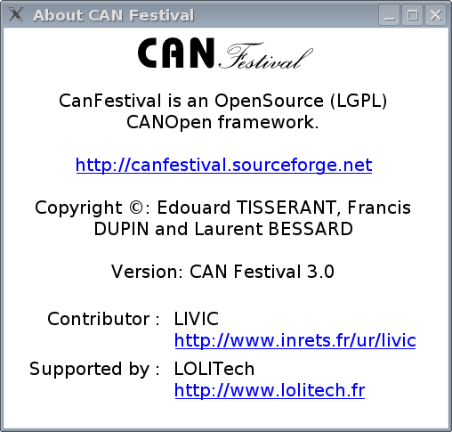
Top list let you choose dictionary section, bottom left list is the selected index in that dictionary, and bottom right list are edited sub -indexes.
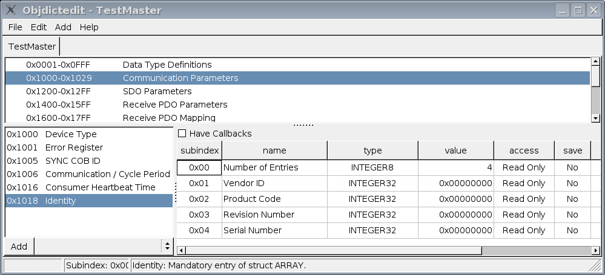
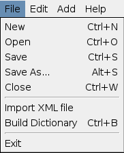
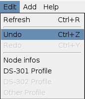
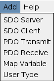
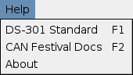
Edit your node name and type. Choose your inherited specific profile.
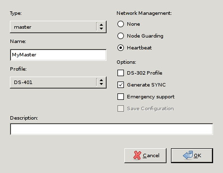
Edit your node name and type.
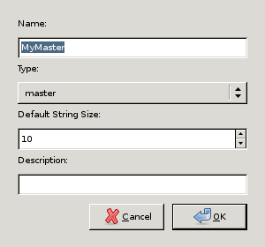
Chose the used profile to edit.
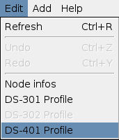
Pick up optional chosen profile entries.
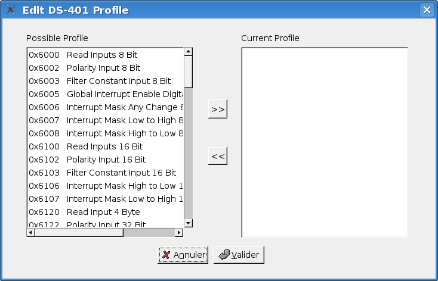
Use User Types to implement value boundaries, and string length
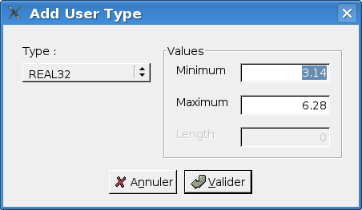
Add your own specific dictionary entries and associated mapped variables.
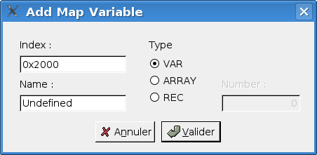
Using F1 key, you can get context sensitive help.
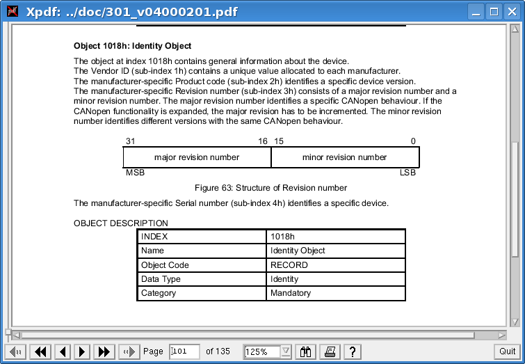
In order to do that, official 301_v04000201.pdf file must be placed into doc/ directory, and xpdf must be present on your system.
F2 key open HTML CanFestival help.
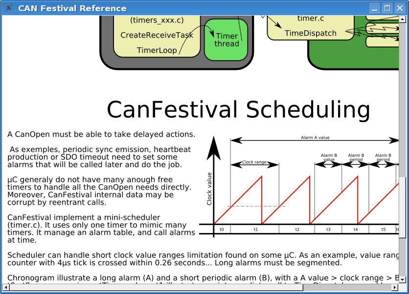
Once object dictionary has been edited and saved, you have to generate object dictionary C code for your CanFestival node.
Menu entry “File/Build Dictionary”.
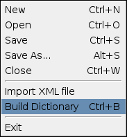
Choose C file to create or overwrite. Header file will be also created with the same prefix as C file.
Usage of objdictgen.py : python objdictgen.py XMLFilePath CfilePath
Yes, with both Cygwin and Visual Studio C++.
Because CANopen layer is coded with C, put a compilation option /TC or /TP if you plan to mix C++ files. See the MSDN documentation about that.
First, be sure that you have at least 40K bytes of program memory, and about 2k of RAM.
You have to create target specific interface to HW resources. Take model on bundled interfaces provided in drivers/ and create your own interface. You also have to update Makefile.in files for target specific cflags and options. Choose –target= configure switch to compile your specific interface.
You are welcome to contribute -back your own interfaces! Other Canfestival users will use it and provide feedback, tests and enhancements.
Thanks to Philippe Foureys (IUT of Valence), a slave node have been tested with the National Instrument CANopen Conformance Test. It passed the test with success.
Some very small unconformity have been found in very unusual situations, for example in the SDO code response to wrong messages.
Just install peak driver and then compile and install Canfestival. Peak driver is detected at compile time.
You have to install the specific driver on your system, with necessary libs and headers.
Use can_peak.c/h or can_virtual.c/h as an example, and adapt it to your driver API.
Execute configure script and choose –can=mydriver
Compatibility:
A T -board from elektronikladen with a MC9S12DP256 or MC9S12DG256.
It is known to work with Metrowerks CodeWarrior. Here are some tips from Philippe Foureys. :
// prototype
void __attribute__((interrupt))timer3Hdl(void):
// function
void __attribute__((interrupt))timer3Hdl(void){...}
// protoype
void interrupt timer3Hdl(void);
// function
pragma CODE_SEG__NEAR_SEG_NON_BANKED
void interrupt timer3Hdl(void)
{...}
pragma CODE_SEG_DEFAULT
void unlock (void)
{
__asm__ __volatile__("cli");
}
void lock (void)
{
unsigned short mask;
__asm__ __volatile__("tpa\n\tsei":"=d"(mask));
}
Unit� mixte de recherche INRETS -LCPC
sur les Interractions V�hicule -Infrastructure -Conducteur
14, route de la mini�re
78000 Versailles
FRANCE
Tel : +33 1 40 43 29 01
Contributors : Francis DUPIN
Camille BOSSARD
Laurent ROMIEUX
Contributors : Edouard TISSERANT (Original author)
Laurent BESSARD
Many thanks to the other contributors for their great work:
Raphael ZULLIGER
David DUMINY (st� A6R)
Zakaria BELAMRI
Send your feedback and bug reports to canfestival-devel@lists.sourceforge.net.
You are free to contribute your specific interfaces back to the project. This way, you can hope to get support from CanFestival users community.
Please send your patch to canfestival -devel@lists.sourceforge.net.
Feel free to create some new predefined DS -4xx profiles (*.prf) in objdictgen/config, as much as possible respectful to the official specifications.
All the project is licensed with LGPL. This mean you can link CanFestival with any code without being obliged to publish it.
#This file is part of CanFestival, a library implementing CanOpen Stack. # #Copyright (C): Edouard TISSERANT, Francis DUPIN and Laurent BESSARD # #See COPYING file for copyrights details. # #This library is free software; you can redistribute it and/or #modify it under the terms of the GNU Lesser General Public #License as published by the Free Software Foundation; either #version 2.1 of the License, or (at your option) any later version. # #This library is distributed in the hope that it will be useful, #but WITHOUT ANY WARRANTY; without even the implied warranty of #MERCHANTABILITY or FITNESS FOR A PARTICULAR PURPOSE. See the GNU #Lesser General Public License for more details. # #You should have received a copy of the GNU Lesser General Public #License along with this library; if not, write to the Free Software #Foundation, Inc., 59 Temple Place, Suite 330, Boston, MA 02111-1307 USA
This document was generated using the LaTeX2HTML translator Version 2024 (Released January 1, 2024)
The command line arguments were:
latex2html -split 0 -dir html manual.tex
The translation was initiated on 2026-04-18